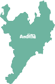
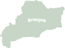
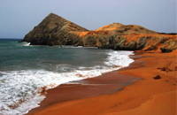
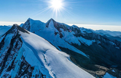
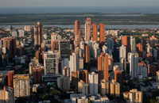
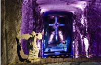
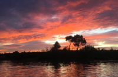
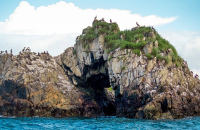

TravelCO
Inicio
Contribución
Feed
Marcela
Travel
CO
¿Cuál es tu próximo destino?


Recomendaciones para ti

Cabo de la Vela
Un destino turistico muy famoso en La Guajira, encuentra lugares como La playa dorada y el Ojo del Agua
4.8
Cartagena de Indias
Una ciudad famosa como sitio turistico llena de castillos antiguos y rica en historia
4.2

Sierra Nevada S.M
Una cordillera en la region Andina que se eleva desde el nivel del mar a unos increibles 5700 metros
4.4

Barranquilla
Una ciudad llena de vida y alegria, donde se siente el sabor de Colombia y todos sus habitantes
4.8
Parque Tayrona
Un paraiso natural en las islas de Santa Marta que invita a conectarse con la naturaleza y disfrutar de paisajes inimaginables
4.8

Catedral de Sal
Una Catedral en las cavernas de sal en Zipaquira, invita a la exploración y la reflexión
4.8

Rio Manacacías
Un rio que recorre una gran parte de Colombia, con varios sitios turisticos y grandes vistas
4.8

Isla Gorgona
Una isla en el Pacífico Colombiano famosa por su gran variedad de fauna y flora marina para explorar
4.8
La Ciudad Perdida
Antiguo poblado de la tribu Tayrona que se ha convertido en un sitio turistico y Arqueologico muy popular
4.8
Próximos eventos
Feria de las Flores
Una feria que celebra los valores del pueblo Antioqueño, lleno de silleteros y hermosos arreglos de flores
8-15 de Agosto
Medellín, Antioquia
Festival de las Cometas
Un festival famoso en Villa de Leyva en su epoca con mas viento, se vuelan cometas como tradición
13-14 de Agosto
Villa de Leyva, Boyacá
Carnaval de N. & B.
Un festival muy importante para el sur Colombiano, lleno de vida y eventos con importancia historica
2-7 de Enero
Pasto
Carnaval de Barranquilla
Una enorme fiesta donde se celebra toda la riqueza cultural que posee el Caribe Colombiano
26-29 de Marzo
Barranquilla
Estereo Picnic
El festival musical alternativo más grande de Colombia que se había realizado anualmente en Bogotá
25-27 de marzo
Bogotá
Festival de cine
En sus pantallas se ha proyectado el mejor cine colombiano
16-21 de marzo
Cartagena
Festival de teatro
Un certamen cultural originado en Bogotá, la "Capital mundial del teatro"
1-17 de abril
Parque Simón Bolívar
Festival folclorico de Ibague
Los mejores expositores del folclor andino den una muestra de su talento artístico.
16-25 de marzo
Ibague, Tolima
Feria del libro
Un evento en el que se reúnen expositores de la industria del libro provenientes de todo el mundo
19 marzo - 2 Abril
Cartagena, Bolívar